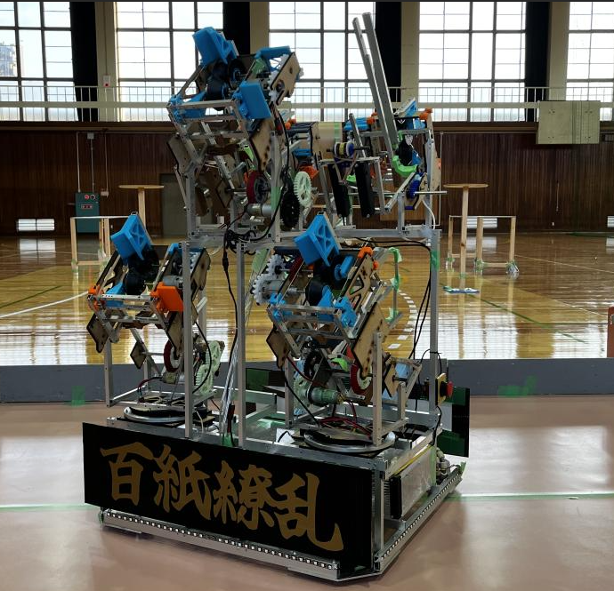
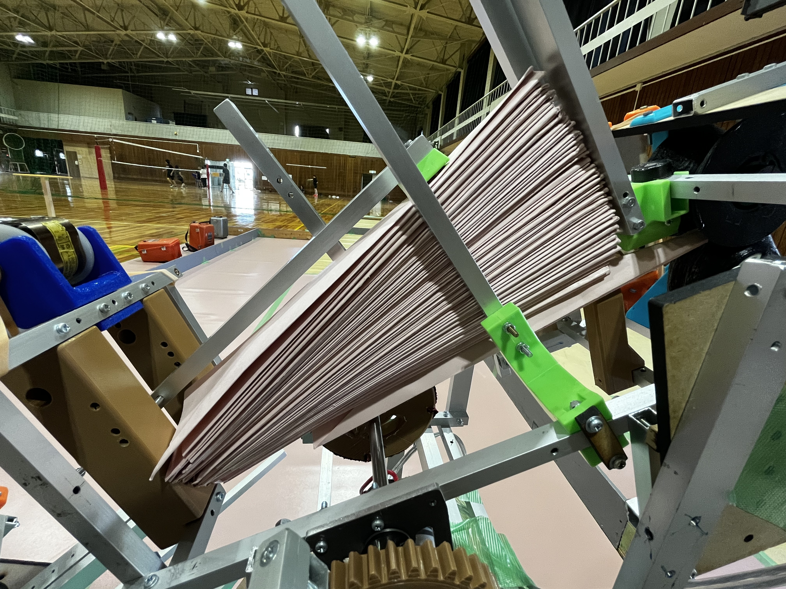

紙飛行機を発射し、任意のスポットに着陸させる競技でした。 紙飛行機は再現性を出すことが難しいため大量に発射することで大量得点を狙います。 5台のタイヤ発射機構と、6台の輪ゴム発射機構を搭載しており最大約500機飛ばします。

私はタイヤ発射機構へ大量の紙飛行機を一機ずつ送り込むための装填機構を作りました。 一般的な2Dプリンターを参考に摩擦力の強いタイヤで紙を取り出します。 紙飛行機を排出する出口は紙飛行機1機の高さに合わせているため、一機ずつ取り出すことができるようになっています。 また、紙飛行機は仕様変更する恐れがあったため一機の高さに合わせ機構もすぐ調整できるように設計しました。

実際の競技の様子 赤コートで大阪公大Bと表記されています。
topに戻る